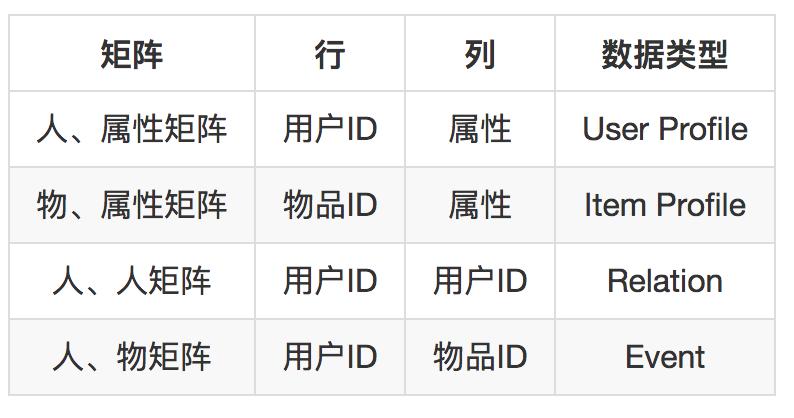
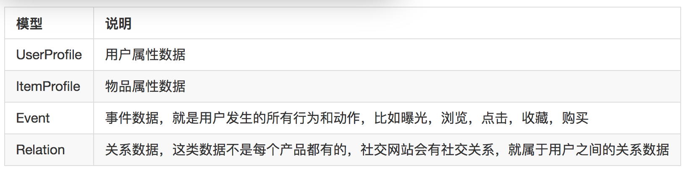
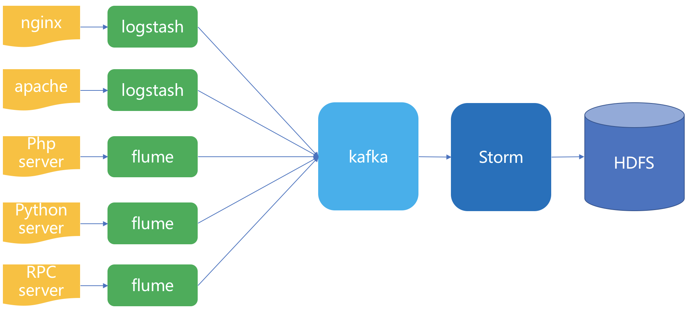
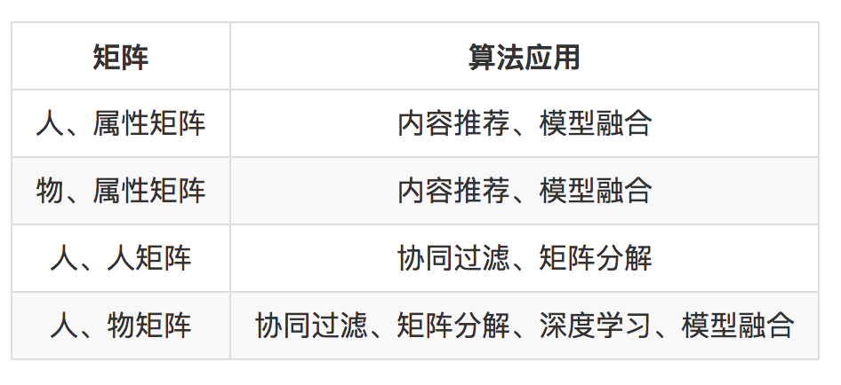

- 00 开篇词 用知识去对抗技术不平等.md.html
- 01 你真的需要个性化推荐系统吗_.md.html
- 02 个性化推荐系统有哪些绕不开的经典问题？.md.html
- 03 这些你必须应该具备的思维模式.md.html
- 04 画鬼容易画人难：用户画像的“能”和“不能”.md.html
- 05 从文本到用户画像有多远.md.html
- 06 超越标签的内容推荐系统.md.html
- 07 人以群分，你是什么人就看到什么世界.md.html
- 08 解密“看了又看”和“买了又买”.md.html
- 09 协同过滤中的相似度计算方法有哪些.md.html
- 10 那些在Netflix Prize中大放异彩的推荐算法.md.html
- 11 Facebook是怎么为十亿人互相推荐好友的.md.html
- 12 如果关注排序效果，那么这个模型可以帮到你.md.html
- 13 经典模型融合办法：线性模型和树模型的组合拳.md.html
- 14 一网打尽协同过滤、矩阵分解和线性模型.md.html
- 15 深度和宽度兼具的融合模型 Wide and Deep.md.html
- 16 简单却有效的Bandit算法.md.html
- 17 结合上下文信息的Bandit算法.md.html
- 18 如何将Bandit算法与协同过滤结合使用.md.html
- 19 深度学习在推荐系统中的应用有哪些_.md.html
- 20 用RNN构建个性化音乐播单.md.html
- 21 构建一个科学的排行榜体系.md.html
- 22 实用的加权采样算法.md.html
- 23 推荐候选池的去重策略.md.html
- 24 典型的信息流架构是什么样的.md.html
- 25 Netflix个性化推荐架构.md.html
- 26 总览推荐架构和搜索、广告的关系.md.html
- 27 巧妇难为无米之炊：数据采集关键要素.md.html
- 28 让你的推荐系统反应更快：实时推荐.md.html
- 29 让数据驱动落地，你需要一个实验平台.md.html
- 30 推荐系统服务化、存储选型及API设计.md.html
- 31 推荐系统的测试方法及常用指标介绍.md.html
- 32 道高一尺魔高一丈：推荐系统的攻防.md.html
- 33 和推荐系统有关的开源工具及框架介绍.md.html
- 34 推荐系统在互联网产品商业链条中的地位.md.html
- 35 说说信息流的前世今生.md.html
- 36 组建推荐团队及工程师的学习路径.md.html
- 加餐 推荐系统的参考阅读.md.html
- 结束语 遇“荐”之后，江湖再见.md.html
- 捐赠
27 巧妇难为无米之炊：数据采集关键要素
推荐系统离不开数据，数据就是推荐系统的粮食，要有数据就得收集数据。在自己产品中收集数据，主要还是来自日志。
日志和数据
数据驱动这个概念也是最近几年才开始流行起来的，在古典互联网时代，设计和开发产品完全侧重于功能易用和设计精巧上，并且整体驱动力受限于产品负责人的个人眼光，这属于是一种感性的把握，也因此对积累数据这件事就不是很重视。
在我经手的产品中，就有产品上线很久，需要搭建推荐系统时，却发现并没有收集相应的数据，或者收集得非常杂乱无章。
关于数据采集，按照用途分类又有三种：
- 报表统计；
- 数据分析；
- 机器学习。
当然，这三种的用途并不冲突，而且反而有层层递进的关系。最基本的数据收集，是为了统计一些核心的产品指标，例如次日留存，七日留存等，一方面是为了监控产品的健康状况，另一方面是为了对外秀肌肉，这一类数据使用非常浅层，对数据的采集要求也不高。
第二种就是比较常见的数据采集需求所在了。在前面第一种用途基础上，不但需要知道产品是否健康，还需要知道为什么健康、为什么不健康，做对了什么事、做错了什么事，要从数据中去找到根本的原因。
这种数据采集的用途，驱动了很多多维分析软件应运而生，也驱动了多家大数据创业公司应运而生。
数据分析工作，最后要产出的是比较简明清晰直观的结论，这是数据分析师综合自己的智慧加工出来的，是有人产出的。
它主要用于指导产品设计、指导商业推广、指导开发方式。走到这一步的数据采集，已经是实打实的数据驱动产品了。
第三种，就是收集数据为了机器学习应用，或者更广泛地说人工智能应用。那么机器学习应用，主要在消化数据的角色是算法、是计算机，而不是人。
这个观点是我在专栏写作之初，讲解用户画像相关内容时就提到的，再强调一遍就是，所有的数据，不论原始数据还是加工后的数据都是给机器“看”的，而不是给人“看”的。
所以在数据采集上，可以说多多益善，样本是多多益善，数据采集的维度，也就是字段数多多益善，但另一方面，数据是否适合分析，数据是否易于可视化地操作并不是核心的内容。
当然，实际上在任何一款需要有推荐系统的产品中，数据采集的需求很可能要同时满足上述三种要求。
本文为了讨论方便，不会重点讨论多维数据分析的用途，而是专门看看为了满足推荐系统，你需要怎么收集日志、采集数据。
因为推荐系统就是一个典型的人工智能应用，数据是要喂给机器“吃”的。
下面我就开始给你详细剖析一下为推荐系统收集日志这件事。
数据采集
给推荐系统收集日志这件事，依次要讨论的是：日志的数据模型，收集哪些日志，用什么工具收集，收集的日志怎么存储。
1.数据模型
数据模型是什么？所谓数据模型，其实就是把数据归类。产品越复杂，业务线越多，产生的日志就越复杂。
如果看山是山，一个数据来源一个数据来源地去对待的话，那将效率非常低下，因此需要首先把要收集的日志数据归入几个模型。不同的数据应用，数据模型略有不同。
就推荐系统而言，推荐系统要做的事情就是预测那些最终会建立的人和物之间的连接，依赖的是已有的连接，以及人和物的属性，而且，其中最主要的是已有的连接，人和物的属性只不过是更加详细描述这些连接而已。
数据模型帮助梳理日志、归类存储，以方便在使用时获取。你可以回顾一下在前面讲过的推荐算法，这些推荐算法形形色色，但是他们所需要的数据可以概括为两个字：矩阵。
再细分一下，这些矩阵就分成了四种。

基于这个分析，可以给要收集的数据归纳成下面几种。

有了数据模型，就可以很好地去梳理现有的日志，看看每一种日志属于哪一种。并且，在一个新产品上线之初，该如何为将来的推荐系统记录日志也比较清楚了。这个数据模型当然不能概括全部数据，但是用来构建一个推荐系统就绰绰有余了。
接下来就是去收集数据了。收集数据，就是把散布在各个地方的数据聚拢，也包括那些还根本没有记录的数据的地方要开始记录。
2.数据在哪？
按照前面的数据建模，我们一起来看一下要收集的数据会怎么产生。主要来自两种，一种是业务运转必须要存储的记录，例如用户注册资料，如果不在数据库中记录，产品就无法正常运转。
另一种就是在用户使用产品时顺便记录下来的，这叫做埋点。第一种数据源来自业务数据库，通常都是结构化存储，MySQL。第二种数据需要埋点，埋点又有几种不同方法。
第一种，SDK埋点。这个是最经典古老的埋点方法，就是在开发自己的App或者网站时，嵌入第三方统计的SDK，App如友盟等，网站如Google Analytics等。
SDK在要收集的数据发生点被调用，将数据发送到第三方统计，第三方统计得到数据后再进一步分析展示。
这种数据收集方式对推荐系统的意义不大，因为得不到原始的数据而只是得到统计结果，我们可以将其做一些改动，或者自己仿造做一些开发内部数据采集SDK，从而能够收集到鲜活的数据。
第二种，可视化埋点。可视化埋点在SDK埋点基础上做了进一步工作，埋点工作通过可视化配置的方式完成，一般是在App端或者网站端嵌入可视化埋点套件的SDK，然后再管理端接收前端传回的应用控件树，通过点选和配置，指令前端收集那些事件数据。业界有开源方案实现可参考，如Mixpanel。
第三种，无埋点。所谓无埋点不是不埋点收集数据，而是尽可能多自动收集所有数据，但是使用方按照自己的需求去使用部分数据。
SDK埋点就是复杂度高，一旦埋点有错，需要更新客户端版本，可视化埋点的不足就是：收集数据不能收集到非界面数据，例如收集了点击事件，也仅仅能收集一个点击事件，却不能把更详细的数据一并返回。
上面是按照技术手段分，如果按照收集数据的位置分，又分为前端埋点和后端埋点。
这两个区别是这样的，举个例子，要收集用户的点击事件，前端埋点就是在用户点击时，除了响应他的点击请求，还同时发送一条数据给数据采集方。
后端埋点就不一样了，由于用户的点击需要和后端交互，后端收到这个点击请求时就会在服务端打印一条业务日志，所以数据采集就采集这条业务日志即可。
埋点是一项非常复杂繁琐的事情，需要前端工程师或者客户端工程师细心处理，不在本文讨论范围内。但是幸好，国内如神策数据等公司，将这些工作已经做得很傻瓜化了，大大减轻了埋点数据采集的困扰。
对于推荐系统来说，所需要的数据基本上都可以从后端收集，采集成本较低，但是有两个要求：要求所有的事件都需要和后端交互，要求所有业务响应都要有日志记录。这样才能做到在后端收集日志。
后端收集业务日志好处很多，比如下面几种。
- 实时性。由于业务响应是实时的，所以日志打印也是实时的，因此可以做到实时收集。
- 可及时更新。由于日志记录都发生在后端，所以需要更新时可以及时更新，而不用重新发布客户端版本。
- 开发简单。不需要单独维护一套SDK。
归纳一下，Event类别的数据从后端各个业务服务器产生的日志来，Item和User类型数据，从业务数据库来，还有一类特殊的数据就是Relation类别，也从业务数据库来。
3.元素有哪些？
后端收集事件数据需要业务服务器打印日志。需要打印哪些信息才算是一条完整的时间数据呢？大致需要包含下面的几类元素。
- 用户ID，唯一标识用户身份。
- 物品ID，唯一标识物品。这个粒度在某些场景中需要注意，例如电商，物品的ID就不是真正要去区别物和物之间的不同，而是指同一类试题，例如一本书《岛上书店》，库存有很多本，并不需要区别库存很多本之间的不同，而是区别《岛上书店》和《白夜行》之间的不同。
- 事件名称，每一个行为一个名字。
- 事件发生时间，时间非常重要。
以上是基本的内容，下面再来说说加分项。
- 事件发生时的设备信息和地理位置信息等等；
- 从什么事件而来；
- 从什么页面而来；
- 事件发生时用户的相关属性；
- 事件发生时物品的相关属性。
把日志记录想象成一个Live快照，内容越丰富就越能还原当时的场景。
4.怎么收集？
一个典型的数据采集架构如下图所示。

下面描述一下这个图。最左边就是数据源，有两部分，一个是来自非常稳定的网络服务器日志，nginx或者Apache产生的日志。这类日志对推荐系统的作用是什么呢？
因为有一类埋点，在PC互联网时代，有一种事件数据收集方式是，放一个一像素的图片在某个要采集数据的位置。
这个图片被点击时，向服务端发送一个不做什么事情的请求，只是为了在服务端的网络服务器那里产生一条系统日志。 这类日志用logstash收集。
左边另外的数据源就是业务服务器，这类服务器会处理具体场景的具体业务，甚至推荐系统本身也是一个业务服务器。
这类服务器有各自不同的日志记录方式，例如Java是Log4j，Python是Logging等等，还有RPC服务。这些业务服务器通常会分布在多台机器上，产生的日志需要用Flume汇总。
Kafka是一个分布式消息队列，按照Topic组织队列，订阅消费模式，可以横向水平扩展，非常适合作为日志清洗计算层和日志收集之间的缓冲区。
所以一般日志收集后，不论是Logstash还是Flume，都会发送到Kafka中指定的Topic中。
在Kafka 后端一般是一个流计算框架，上面有不同的计算任务去消费Kafka的数据Topic，流计算框架实时地处理完采集到的数据，会送往分布式的文件系统中永久存储，一般是HDFS。
日志的时间属性非常重要。因为在HDFS中存储日志时，为了后续抽取方便快速，一般要把日志按照日期分区。当然，在存储时，按照前面介绍的数据模型分不同的库表存储也能够方便在后续构建推荐模型时准备数据。
5.质量检验
数据采集，日志收集还需要对采集到的数据质量做监控。数据质量通常需要数据中心的同学重点关注。推荐系统作为数据的使用方，虽然不用重点关注如何保证数据质量，但是需要能够发现数据质量问题，不然在错误的数据上无法训练出聪明的推荐模型的。
关注数据质量，大致需要关注下面几个内容。
- 是否完整？事件数据至少要有用户ID、物品ID、事件名称三元素才算完整，才有意义。
- 是否一致？一致是一个广泛的概念。数据就是事实，同一个事实的不同方面会表现成不同数据，这些数据需要互相佐证，逻辑自洽。
- 是否正确？该记录的数据一定是取自对应的数据源，这个标准不能满足则应该属于Bug级别，记录了错误的数据。
- 是否及时？虽然一些客户端埋点数据，为了降低网络消耗，会积攒一定时间打包上传数据，但是数据的及时性直接关系到数据质量。由于推荐系统所需的数据通常会都来自后端埋点，所以及时性还可以保证。
总结
今天和你聊了数据采集的若干要点。数据是推荐系统做饭的米，没有数据就没有任何推荐策略的落地，因此采集数据是一个非常重要的工作。
采集数据需要首先梳理好自己的数据有哪些，本文不是帮你梳理你的自己的产品中有哪些数据，而是告诉你看推荐系统需要哪些数据。
另外有一点，数据采集的需求方有很多，推荐系统只是其中一个，通常数据分析对数据的需求，集中在多维数据分析，当然推荐系统也需要多维数据，只是推荐系统更关注事件。
我把这些数据全都看成矩阵，有了矩阵，无论是内容推荐还是协同过滤，矩阵分解，还是机器学习深度学习，就都有了输入。
我总结了推荐系统需要四种矩阵，对应四种数据，列表如下：

为了构建推荐系统，上面四类数据足够了，其中除了Relation数据之外，另外三种是必须的。所以，你照着这个药方子去抓药就好了。
另外，我还介绍了日志收集系统的架构图，以及一些埋点技术的简要介绍，可以帮助理解埋点收集数据这件事。
最后，数据质量要过硬，好质量的数据胜似黄金，低质量的数据价值也就不高，收集到错误的数据除了带来存储和传输成本，还无法创造价值，所以检测数据质量也很重要。
今天就讲到这里，最后留一个思考问题，一个信息流产品，需要采集的数据具体有哪些？欢迎留言一起讨论。
感谢你的收听，我们下次再见。
© 2019 - 2023 Liangliang Lee. Powered by gin and hexo-theme-book.